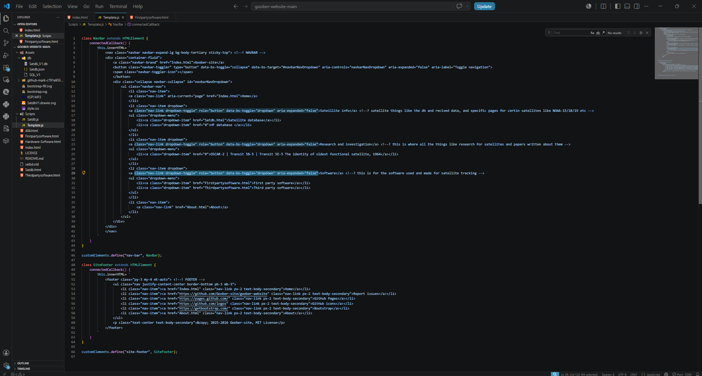

Our In House Software Development
Page index:
Goober-site
This website was created on the 28th of June 2025, with one goal, to provide information about satellites for free to anyone who wished. Created in the following months of Goober Tracking Station, an amateur satellite listening station was created by Bailey with a simple RTL-SDR Blog V3 and a telescoping V dipole. In the website’s infancy, Bailey had first posted the sites URL to a discord channel for people to give feedback on, one user said “It looks like an excel spreadsheet”; with that being said, it really did look like a Microsoft Excel spreadsheet.
Everything was hard coded, meaning all satellite data in its primitive database was physically programmed in the html file; until recently, our website had poor graphics due to the primitive nature of it, causing accessibly and performance issues. For contrast, the site wasn’t readable on mobile devices until recently Bailey decided to use Bootstrap for formatting and graphics, greatly improving performance and accessibility.

The first thing Bootstrap was used to change was the Index.html page (Home page), the first thing added was a navigation bar at the top of the page rather than a lame table used for site navigation. After the navbar was created, the footer was completely overhauled with new links while still containing the copy right notice for this software. I (Bailey), really recommend Bootstrap for your websites, its free and easy to use it can be found in the footer of every page.
Satdb
The satellite database was first hard coded into a html file until when development for the .json version started on Saturday, 28th of March 2026. The first hard coded version was hard to maintain and edit, with low readability and flexibility with no search capabilities; relying on the users to manually find each satellite on the webpage, providing a purpose for a new more flexible database. Thus, in turn the .json version was created on the 28th of March 2026 after the sol developer Bailey had gained the necessary knowledge to create a more advanced database; requiring more than just the bare basics on web development that he self-taught himself during the early versions of this website when he was 15 years old.
A few months after Baileys 16th birthday, he decided to rework the whole database into a .json file, with the file being read and interpreted by a script made with JavaScript displaying the data into the html page; and allowing for search capabilities in the new database. Partway through migrating data to the .json database, the developer had realized that having a whole database on one table was extremely inefficient; and stopped migrating data to the .json file while he learned database design in one of his senior high school classes (Digital solutions). Until the 17th of July 2026, when he decided to spend the rest of his school break on Satdb using SQLite3 and continuing to use JavaScript for data interpretation and html to display the data in a table.
The following image is the general structure of Satdb version 1:

Satdb version 1 contains orders of magnitude more information, while using relatively less disk space than the .json version. With multiple lookup tables rather than one, helping reduce duplicated data and allows for more advanced search queries; in addition, the new database allows for easier data correction; with the added benefit of allowing for the ability to change one data entire, updating for all entries containing that data. With the benefit of increasing entire and data integrity overall. - Bailey